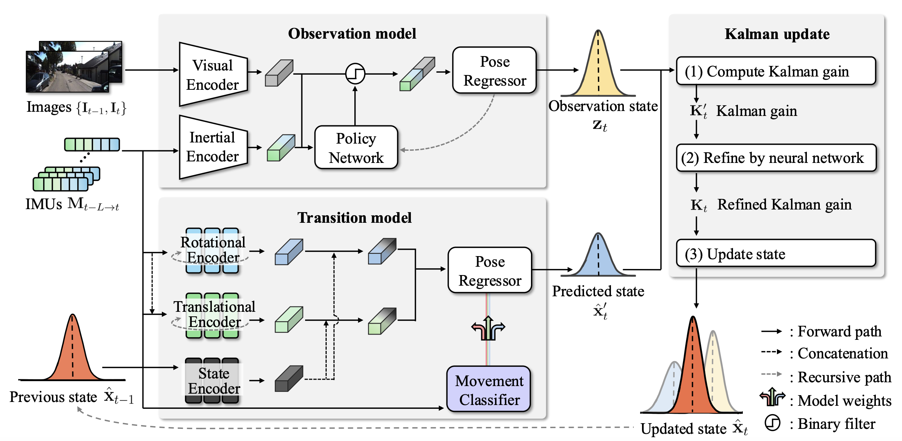

Visual-inertial odometry (VIO) is a critical component in robotics applications, enabling accurate motion estimation. However, recent VIO methods rely on short time interval sensor readings without contextual understanding, limiting their ability to capture proper motion dynamics. Inspired by the estimation process of the Kalman filter, we propose a novel Kalman filter-inspired VIO framework consisting of multiple transition models to capture actual motion dynamics. Specifically, we present a movement classifier that categorizes the movement of the agent from IMU readings for adaptively fusing multiple motion priors. We decouple the given IMU readings into angular velocity and acceleration to input them into encoders tailored for rotational and translational characteristics by eliminating unnecessary interference. Furthermore, we introduce a regularization loss that induces the proposed learnable transition model to align with the properties of the Kalman system equations. Experimental results on the KITTI and nuScenes datasets show that our method significantly improves rotation estimation accuracy and maintains competitive translation estimation performance.
The classical transition model infers a single pose uncertainty along the trajectory (dotted ellipsoids). In contrast, our model predicts multiple pose uncertainties (each colored ellipsoid) based on motion priors. Individual pose uncertainties are fused into a single, combined uncertainty based on movement probabilities (e.g., left turn, straight movement, right turn).

The observation model (top box) processes images $\{{\mathbf{I}_{t-1}, \mathbf{I}_{t}}\}$ and IMU data $\mathbf{M}_{t-1\rightarrow t}$ to estimate the observation state $\mathbf{z}_t$, and the transition model (bottom box) incorporates both angular velocity $\omega_{t-1 \rightarrow t}$ and acceleration $a_{t-1 \rightarrow t}$ to predict the predicted state $\hat{\mathbf{x}}_t^{\prime}$. The Kalman update step (right box) fuses each state using a Kalman gain $\mathbf{K}_t$, resulting in the updated state $\hat{\mathbf{x}}_t$.
Our transition model separately processes angular velocity $\omega$ and acceleration $a$ through each LSTM and incorporates the previous state information into the MLP. The fused vectors are then split and passed through separate MLPs to predict the rotation $\phi$, translation $\mathbf{v}$, and the associated uncertainty matrices $\mathbf{A}$ and $\mathbf{Q}$.
We present the trajectories projected onto the XZ plane, representing the poses of agent on the ground at each time step (top). We also illustrate the vertical displacement over time (bottom). Our proposed method (red line) exhibits a tendency to stay close to the ground truth (black dotted line).
We color the highest logit of the classifier at each pose: red for left turns, green for straight movement, and blue for right turns. Trajectories are projected onto the XZ plane. We conduct a study on the KITTI dataset.
We present the trajectories projected onto the XY plane, representing the poses of agent on the ground at each time step. Our proposed method (red line) exhibits a tendency to stay close to the ground truth (black dotted line).